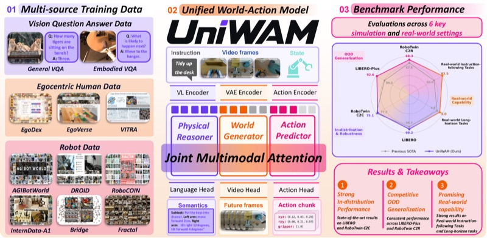

Selected work
* Equal contribution
Pushing the boundaries of the world through robotics.
I am Jingbo Wang, a fourth-year undergraduate student at South China University of Technology (SCUT). Currently, I am an intern at the Hong Kong University of Science and Technology (Guangzhou), under the supervision of Haoang Li. I am also a research assistant at AIR, Tsinghua University.
* Equal contribution
Intern
Models
Research Assistant
World models · Advised by Prof. Yan Wang
Research Assistant
Vision-language-action models · Advised by Prof. Haoang Li
Project Leader
Deep learning for surgical instrument recognition
B.Eng. in Computer Science · Full English Teaching Class
GPA: 3.92Rank: 2/34